TL;DR
Video models1–3 are widely used as world models for robotics4, planning and autonomous driving5. These models promise to imagine the future. You show a model a scene, and it predicts what happens next.
We test the idea that models learn the state of the world. When a small change in a scene changes the outcome, their predictions should change too. In the physical world, tiny differences decide outcomes. A block shifted 1 mm to the right falls off the table. Shifted 1 mm to the left, it stays. If a model understands the state of the world, a small change that crosses a physical boundary should flip its prediction.
To test this, we built FlipTest, a benchmark of simulated and real-world tasks. Each task uses minimal pairs. These are two almost identical scenes on opposite sides of a physical tipping point, with opposite ground-truth outcomes.
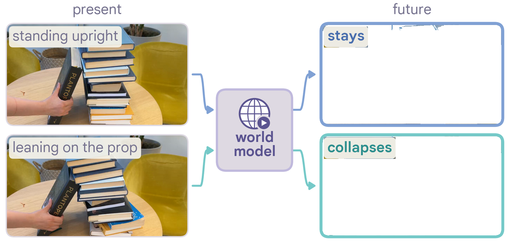
The finding? Current video world models mostly fail. Even the best model we tested scored below random guessing overall. Bigger models, newer checkpoints, physics-informed pretraining, and reasoning tuning helped only a little.
A VLM prompted on the same scenes solved most real-world pairs. But it had difficulty finding the exact boundary. Giving a coding agent basic measurement tools (NumPy, SciPy, scikit-image) increased accuracy further. Adding a full physics simulation engine (MuJoCo) did not give a meaningful boost.
We hope these findings encourage researchers to rethink "world modeling" by pure video prediction. Next-frame prediction must do more than draw plausible pixels. It must also identify the causal states that control future dynamics.
What we want to measure in FlipTest
The idea of a world model goes back to Craik6. An intelligent system carries a small model of the world and uses it to test outcomes before it acts. Researchers now propose video world models as this kind of simulator for robots and embodied agents1,4. A robot can use one to imagine where each candidate action leads, and then pick the best action.
Most benchmarks that evaluate video world models look at one generated video. They ask whether it looks physically plausible7–9. But a video can look physically plausible and still get cause and effect wrong. For example, a model can show a box that falls from a table in a realistic way. Yet the box sits far enough from the edge that it should stay. We test whether a model's predictions follow the state of the world. When two nearly identical scenes have opposite outcomes, the model should predict opposite outcomes too.
Why does the state matter?
By state, we mean the physical quantities that decide what happens next, such as positions, sizes, masses and friction. In robotics, candidate actions often differ only slightly, and so do the scenes they produce. A robot that places a cup near the table edge must know whether the cup will stay or fall. A robot that stacks boxes must know whether the stack will stand. A robot that inserts a peg must know whether the peg fits the hole. In each case, a few millimeters decide the outcome. In the image, the difference is only a few pixels.
We built FlipTest around this idea. FlipTest includes 1,680 first frames from 25 tasks, 10 simulated in MuJoCo10 and 15 from the real world. The tasks cover six families of physics. These families are statics and toppling, friction and rolling, size and fit, free fall and trajectory, collision and momentum, and fluids and materials. The paper explains how we built and calibrated each task. Figure 2 shows example pairs from each family.
Statics & toppling
Friction & rolling
Size & fit
Free fall & trajectory
Collision & momentum
Fluids & materials
Many physical systems have a boundary between two outcomes. Near the boundary, a small change in the state flips the outcome. If a model predicts from the state, its prediction should flip too. We test each boundary at three levels. Each level is stricter than the previous level. The levels include 300 minimal pairs (600 frames), 600 control frames and 480 sweep frames.
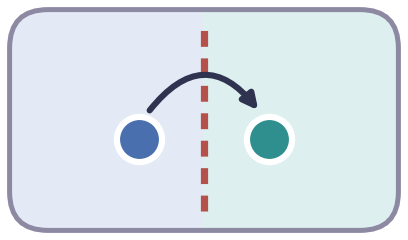
Level 1: pairs. Two frames sit on opposite sides of the boundary. A model gets credit for a pair only if it gets both outcomes right. Random guessing gets 25%.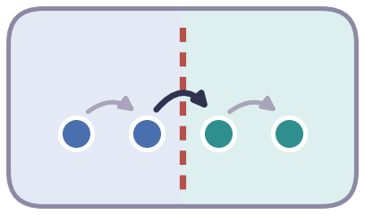
Level 2: controls. There are four evenly spaced states. Only the middle step crosses the boundary. A model that reads the state should flip only there.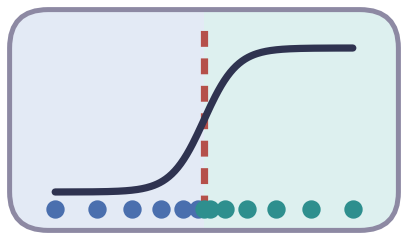
Level 3: sweeps. There are 30 states that run across the boundary. They show where a model switches its prediction and how sharply.
Every model sees only the clean first frame and a neutral prompt. The video model generates a video of the outcome. Then two automatic judges watch the video and decide which outcome it shows. The paper has the full details on metrics, prompts and judging.
To conclude, our test fits in one sentence.
If a small change to the present changes the future, the prediction should change too.
Results: How do video world models do on FlipTest?
We test today's video world models on all three levels of FlipTest, from the easiest to the strictest. The test includes 11 image-to-video world models from four groups:
- General video generators: Omni 1.1 Flash, MiniMax-H3, Wan2.2-I2V-A14B, HunyuanVideo-1.5, CogVideoX1.5-5B-I2V.
- Reasoning-tuned: VBVR-Wan2.2.
- Physical-AI models: Cosmos-Predict2.5, Cosmos3-Nano, Cosmos3-Super.
- Robot-oriented models: VPP2, LingBot-Video-MoE-30B-A3B.
Each model generates one video per first frame.
Result 1: Video models rarely solve minimal pairs
We start with the most basic question. When two nearly identical scenes have opposite outcomes, can a video model show both outcomes correctly?
We use the level 1 pairs. We give each model the two first frames of a pair, one at a time, and it generates a video for each. We count a pair as solved only if both videos show the correct outcome. Random guessing solves 25% of pairs.
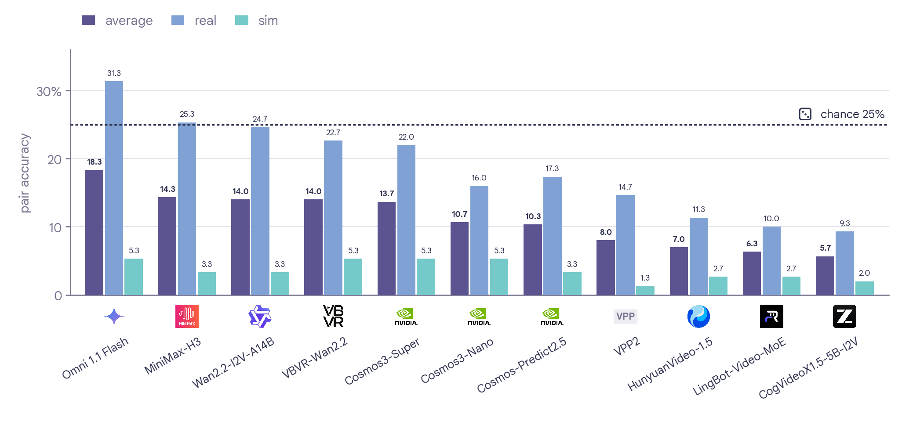
We find that video models rarely solve a pair. On the simulated tasks, no model scores above 5.3%, far below the 25% from random guessing. On real scenes, Omni 1.1 Flash does best with 31.3%, followed by MiniMax-H3 (25.3%) and Wan2.2-I2V-A14B (24.7%). Only Omni 1.1 Flash and MiniMax-H3 score higher than random guessing.
We find that video models often give both frames the same outcome. This behavior explains scores below random guessing. The two frames should produce opposite outcomes. If a model shows the same outcome for both, one video is always wrong and the pair is never solved.
We find that bigger models, newer versions and extra tuning help only a little. Averaged over both sim and real splits, the larger Cosmos3-Super (13.7%) scores slightly higher than Cosmos3-Nano (10.7%). The newer Cosmos3-Nano scores slightly higher than Cosmos-Predict2.5 (10.3%). Reasoning tuning does not help either: VBVR-Wan2.2 scores 14.0%, exactly the same as its base model. Physics-oriented training also gives no advantage. Cosmos3-Super reaches 13.7%, and Wan2.2, an open general model of similar scale, reaches 14.0%.
In short: when two nearly identical scenes should have opposite outcomes, video models usually show the same outcome for both. Bigger, newer or further-trained models barely do better.
Examples: What the video models generate for each pair
Here are six pairs, three simulated and three real. For each frame, we show the videos from four of the models. Pick a pair and compare the two columns. A model passes only if its two videos show different outcomes and both match the ground truth.
✓ matches the ground truth, ✗ does not, and ? means no outcome could be read from the video.
Result 2: Video models do not react to the change that matters
Result 1 shows that video models fail on pairs. We now want to know why. A model can fail in two opposite ways:
- Blindness (Under-reacting): The model ignores the difference and never flips its answer.
- Noise (Over-reacting): The model flips its answer randomly to any visual change, even when physics has not changed.
To separate these two cases, we use the level 2 controls: four evenly spaced states of the same scene. Only the middle step crosses the boundary. We then compare two rates:
- Signal: How often does the model flip when it crosses the true physical boundary?
- Noise: How often does it flip for an equal-sized change that stays on the same side?
We call the difference between the two rates Selective Sensitivity. A model that reads the state flips only when it matters, so its selective sensitivity is well above zero.
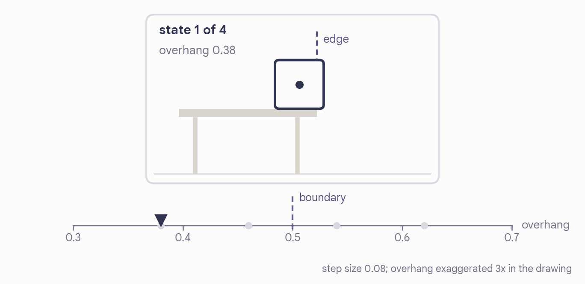
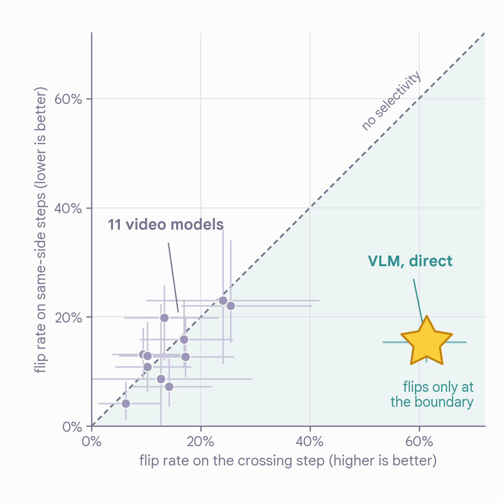
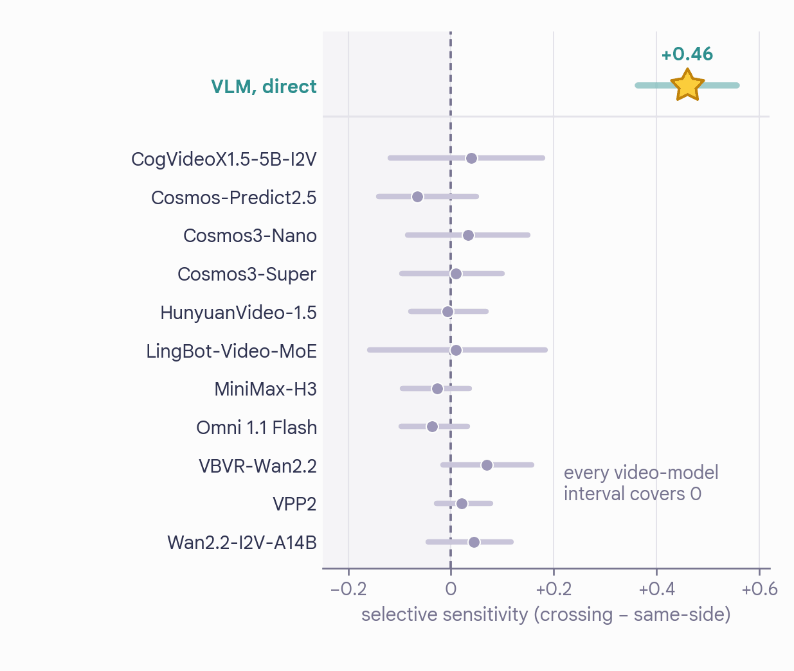
We find that video models fail by blindness. All 11 video models sit right on the diagonal in Figure 4. Both rates are low. The models change their prediction for a small tweak (4–23%) as often as for a true tipping point (6–25%). Their selective sensitivity stays near zero, from −0.07 to +0.07.
We find that a VLM does react to the change that matters. When we test Gemini 3.6 Flash directly on the first frame, it flips on 61% of boundary-crossing steps. It flips on only 15% of same-side steps. Its selective sensitivity is +0.46.
In short: video models do not notice the small change that decides the outcome. They rarely change their prediction. When they do change, it is just as often for a change that does not matter.
Result 3: Video models cannot find where the outcome flips
Pairs and controls test only a few points near the boundary. We also examine the full transition. As a scene moves step by step from one outcome to the other, does the prediction switch? Does it switch at the right place?
We use the level 3 sweeps with 30 states per scene across the boundary. The sweep covers four simulated tasks. They are a box sliding off a desk, a block on an incline, a seesaw tipping, and a block stack that may collapse. We test three video world models, an image generator (Nano Banana Pro), and two VLMs. At each step, we record how often each model predicts the event (Figure 5).
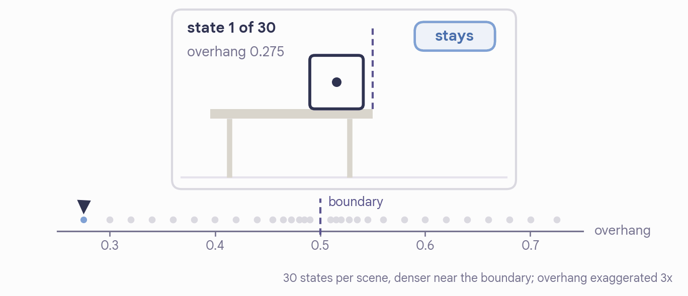
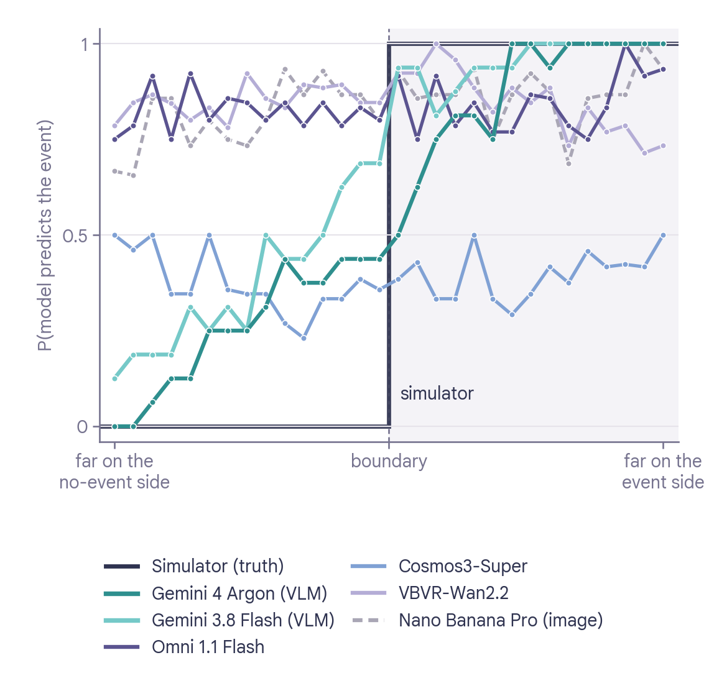
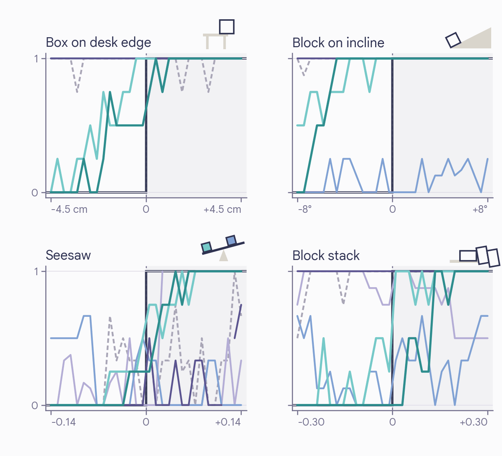
We find that video models predict the same outcome along the whole sweep. Their curves are flat on all four tasks. We compare how often a model predicts the event on the two sides of the boundary. The difference is near zero: +0.02 for Omni 1.1 Flash, +0.02 for Cosmos3-Super, 0.00 for VBVR-Wan2.2, and +0.06 for Nano Banana Pro. The curves stay flat even at the far ends of the sweep, where the scenes look different. On each task, a video model predicts the event almost always or almost never, wherever the object sits.
We find that VLMs do follow the change. Their curves rise in an S shape across the boundary, with gaps of +0.62 (Gemini 4 Argon) and +0.58 (Gemini 3.8 Flash).
We find that VLMs put the boundary slightly in the wrong place. Their curves usually rise too early. They predict that the object falls or slides while the scene is still on the stable side. However, this result depends on the task. On the block stack task, Gemini 4 Argon makes the opposite error.
In short: as a scene moves step by step past the tipping point, video models predict the same outcome. VLMs like Gemini do follow the change, but they usually expect the outcome to flip too early.
Where do video models fail?
Results 1 to 3 show that video models often predict the wrong outcome. We now want to know which step goes wrong. We can split predicting the outcome from one image into three steps:
- Perception: Read the physical state from the image, such as how far a box hangs over the desk edge.
- Physics: Calculate how that state changes over time.
- Rendering: Draw the outcome as video frames.
We borrow this split from Visual De-animation11, which builds the three steps as separate parts. A video world model does all three inside one network. When it fails, we cannot see which step failed.
To find the answer, we compare three predictors that make different steps explicit:
- VLM, direct. Gemini 4 Argon looks at the image and answers in one call, with no tools.
- Measure agent. This coding agent is built on the same model. Before it answers, it can write code to measure the image (NumPy, SciPy, scikit-image). It has no physics engine.
- Simulation agent. This is the same agent with one extra rule. It must rebuild the scene in MuJoCo and take its answer from the simulation. We re-run that simulation in a fresh offline sandbox.
For a fair comparison, all three systems get the same first frame and neutral prompt as the video models. We disable web access.
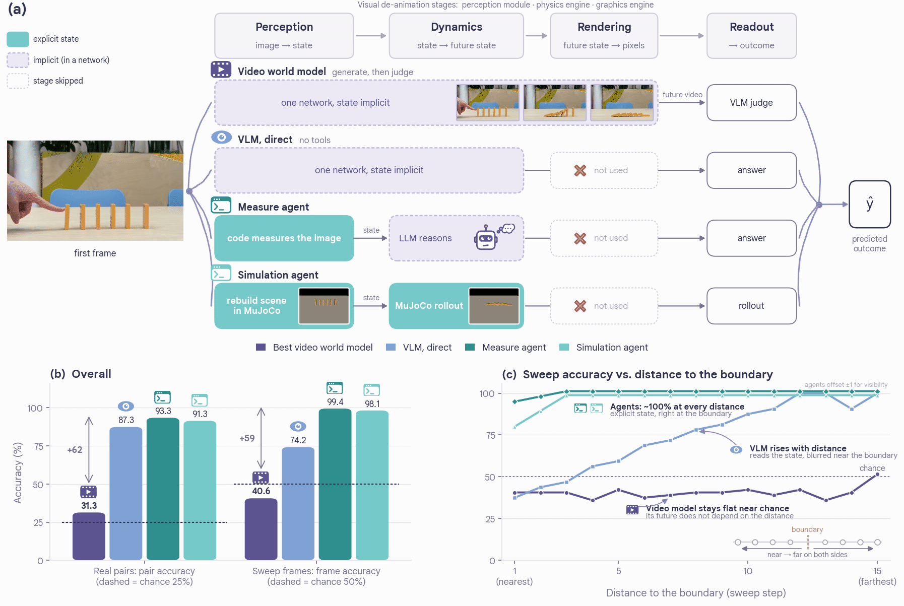
We find that a VLM can read the outcome from the same first frame. When we ask the VLM directly, it solves 87.3% of real pairs. The best video model solves 31.3%. On the sweeps, the VLM makes mistakes close to the boundary. Within each task, the mistakes all lean the same way. For example, out of 120 frames per task, it calls 42 resting blocks on the incline sliding. On the block stack, it leans the other way and calls 25 collapsing towers stable. We conclude that the VLM looks at the right thing and only sets the boundary slightly wrong.
We find that measuring the image locates the boundary almost perfectly. When the agent measures the image, it solves 93.3% of real pairs and 99.4% of sweep frames. We see only three mistakes on the sweeps. All three mistakes are on seesaw frames at the two steps closest to the boundary, where it answers balanced. On real pairs, we see the largest gains when the deciding quantity can be measured directly in the pixels. For example, for the task about objects at the table edge, accuracy rises from 70% to 100%. The agent measures how far the object hangs over the edge. We see the smallest gains when the deciding quantity is 3D and hard to judge from one view, such as propped stacks.
We find that adding a physics engine barely helps. When the agent simulates the scene in MuJoCo, it solves 91.3% of real pairs and 98.1% of sweep frames. This score is about the same as measuring alone. Why so little gain? We record the prediction that the agent makes from its measurements before it builds the scene. That prediction is already right on 96.0% of single real frames. Across 761 simulations on real and sweep frames, the simulation changes the prediction only 4 times. It changes three times for the better and once for the worse. We conclude that once the scene is measured correctly, the physics step is easy. Almost all of the agents' gain comes from measuring.
In short: from the same first frame that the video models see, a VLM and the two agents get most outcomes right. Measuring the scene is the step that matters most. Once the scene is measured, the physics is easy. Video models struggle to predict the outcome from the image.
If you are curious: where the agents spend their time (click)
Each agent run takes about ten minutes (median 615 s for the Measure agent, 636 s for the Simulation agent). The agent spends most of that time measuring the image. The Simulation agent then uses about a quarter of its run to build and run the MuJoCo scene.
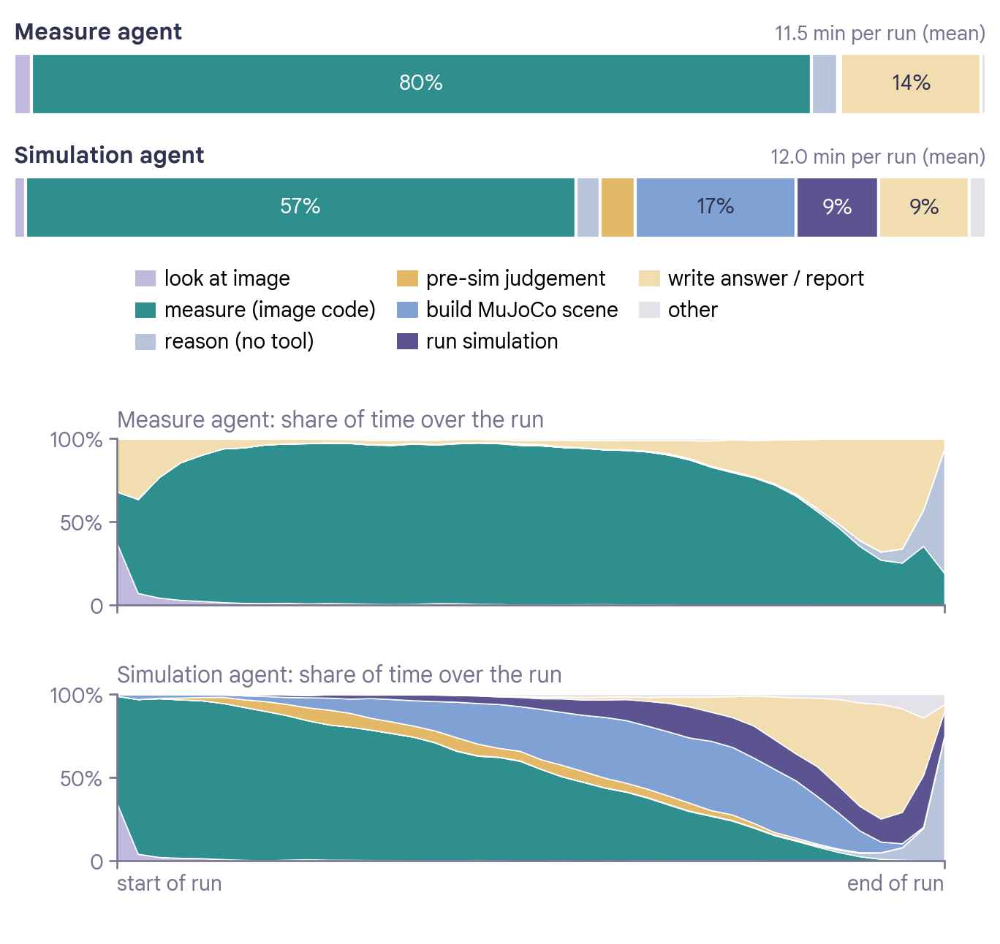
Told the answer, can video models draw it?
The previous section shows that the outcome can be found from the first frame alone. A video model has two jobs. It must predict the outcome, and it must draw the outcome as video. We now test the second job alone. When we tell the model the correct outcome, any mistake that remains comes from drawing.
From the 300 level 1 pairs, we use the 600 first frames and change only one part of each prompt. The neutral prompt names both possible outcomes. Example: the box either stays put on the tabletop or tips over the edge and falls to the floor, depending on how far it overhangs. The new prompt states the true outcome instead. Example: the box tips over the edge and falls to the floor. With the rest of the prompt unchanged, all 11 models generate new videos. A judge (Gemini 3.8 Flash) reads which outcome each video shows. We count unclear videos as wrong.
We find that knowing the answer helps a lot. Pair accuracy increases from 18.3% to 73.7% for Omni 1.1 Flash (Figure 8). It increases from 14.3% to 68.0% for MiniMax-H3 and from 14.0% to 55.7% for Wan2.2-I2V-A14B. This gap shows that video models cannot predict the outcome from the image on their own.
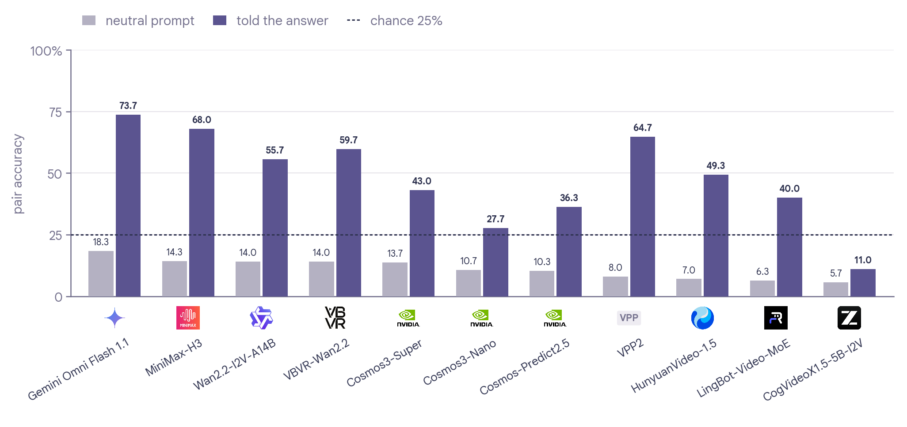
We find that video models still often draw the wrong outcome. Even with the answer, the best model misses about a quarter of pairs. Simulated scenes are harder. Omni 1.1 Flash solves 86.7% of real pairs and only 60.7% of simulated pairs. CogVideoX1.5-5B-I2V solves only 11.0% of pairs.
In short: when we tell video models the outcome, they get far more pairs right. Predicting the outcome is their biggest problem. Even with the answer, they often draw the wrong outcome. Drawing is a problem too.
Our view on what comes next
What must a world model get right? “World model” has become an overloaded term12. It usually refers to one of two roles:
- An interactive environment where an agent can act, explore, and co-evolve safely.
- An internal representation of state that predicts what happens next, so a robot or agent can plan its actions.
In the agentic era, models like Gemini 4 Carbon and Fable 5.2 point toward generalist physical agents that operate in real environments. The main bottleneck is efficiency. Real-world trial and error is too slow, costly, and fragile. World models promise a virtual sandbox where agents can simulate thousands of trials quickly. Here, agents receive physically grounded feedback before they take physical action.
In either role, basic causality is essential. Our FlipTest shows that current video world models fail this basic requirement. When a small change flips what should happen next, video models barely notice the difference. By contrast, our results show that coding agents and standard VLMs read these fine-grained physical states well.
What could future world simulators look like? Our results point toward a modular, agentic blueprint for future world simulators. A single video model does not need to compute the physics and also render the pixels. We can divide the labor. For example, a simple prototype could follow a pipeline like: an agent first analyzes the scene to estimate its physical state. When necessary, it invokes a dedicated simulator or numerical solver to predict the system's evolution. Finally, it passes the predicted trajectory to a video generation model to render the resulting motion.
This kind of approach builds on longstanding ideas from inverse graphics11,13 and analysis-by-synthesis14. It could also build on recent systems that use code and programs as world representations15,16,17. Current agents can already find the correct physical outcome. The main challenge now is to teach video models to render the given outcome faithfully. The video models must not override the physics.
Limitations
By design, FlipTest focuses on threshold dynamics of mostly rigid objects from a single initial frame. We chose this controlled setting because ground-truth outcomes are unambiguous and we can identify the physical boundary precisely. We change a single decisive factor and keep the rest constant. We can then attribute any change in prediction directly to that causal change.
Real-world scenes are messier and involve multiple interacting factors over time. However, sensitivity in simple, isolated regimes is a basic requirement to predict these dynamics. A natural next step is to extend FlipTest to scenes with multiple intersecting boundaries.
Citation
If you find FlipTest useful, please cite:
title = {The Flip
Test: Video
World Models…click to copy
@article{fliptest2026,
title = {The Flip Test: Video World Models Fail to Learn the World State},
author = {Luo, Mi and Yu, Lijun and Yu, Adams Wei and Cao, Ang and Sun, Baochen and Yang, Ming-Hsuan and Hua, Nan and Hao, Yuan and Dimakis, Alex and Xu, Ya and Chi, Ed H. and Wang, Xuezhi and Liu, Yinxiao},
journal = {arXiv preprint},
year = {2026}
}References
- N. Agarwal et al. Cosmos world foundation model platform for physical AI. arXiv:2501.03575, 2025.
- O. Cameron, J. Hawke. Meet Odyssey-3: Our most powerful foundation world model. Odyssey blog, 2026.
- World Labs Team. Atlas: A world model for spatial intelligence. World Labs blog, 2026.
- NVIDIA. GR00T 2: Scaling robot foundation models for generalization, dexterity, and adaptation. Project page, 2026.
- C. M. Jiang, X. Masotto, B. Sun. The Waymo World Model: A new frontier for autonomous driving simulation. Waymo blog, 2026.
- K. J. W. Craik. The Nature of Explanation. Cambridge University Press, 1943.
- H. Bansal et al. VideoPhy: Evaluating physical commonsense for video generation. ICLR, 2025.
- S. Motamed et al. Do generative video models understand physical principles? WACV, 2026.
- D. Li et al. WorldModelBench: Judging video generation models as world models. NeurIPS, 2026.
- E. Todorov, T. Erez, Y. Tassa. MuJoCo: A physics engine for model-based control. IROS, 2012.
- J. Wu, E. Lu, P. Kohli, B. Freeman, J. Tenenbaum. Learning to see physics via visual de-animation. NeurIPS, 2017.
- X. Huang. Towards video world models. Blog post, 2025.
- P. W. Battaglia, J. B. Hamrick, J. B. Tenenbaum. Simulation as an engine of physical scene understanding. PNAS, 2013.
- A. Yuille, D. Kersten. Vision as Bayesian inference: Analysis by synthesis? Trends in Cognitive Sciences, 2006.
- Y. Chen, G. Lin, C. Zhang. Code World Model: Coding agent as world brain. arXiv:2608.25927, 2026.
- Z. Liu et al. Agentic world action models. arXiv:2610.30136, 2026.
- H. Wang et al. Code as Worlds: Agentic discovery of executable world representations for physical reasoning. arXiv:2608.27549, 2026.